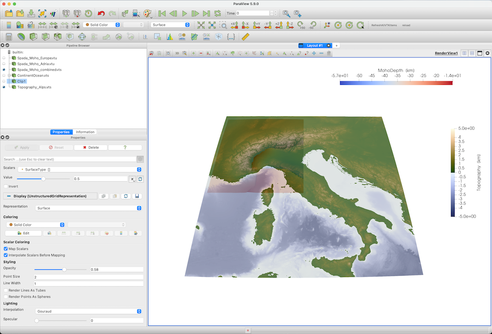

Extract topographic data from GMT.jl
Goal
In many cases, we want to add topographic data as well to our visualization. This tutorial shows how to use GMT.jl to download data from a certain region, and transfer that.
It used to be tricky to get GMT.jl installed and working correctly on your system but that has improved since version 1.0 which now comes with precompiled binaries. So as long as you make sure that your GMT version is >1.0, it should work.
Steps
1. Download topographic data of the Alpine region
The nice thing about GMT is that it automatically downloads data for you for a certain region and with a certain resolution. As this is a routine that you may use often in your daily workflow, we added the function import_topo that simplifies this. Note that this function only is available once GMT is loaded.
julia> using GeophysicalModelGenerator, GMT
julia> Topo = import_topo([4,20,37,49], file="@earth_relief_01m")
GeoData
size : (960, 720, 1)
lon ϵ [ 4.0 : 19.983333333333334]
lat ϵ [ 37.0 : 48.983333333333334]
depth ϵ [ -3.8725 km : 4.2495 km]
fields: (:Topography,)The data is available in different resolutions:
| Dataset | Resolution | Description |
|---|---|---|
| "@earth_relief_01s" | 1 arc sec | SRTM tiles (14297 tiles, land only, 60S-60N) [NASA/USGS] |
| "@earth_relief_03s" | 3 arc sec | SRTM tiles (14297 tiles, land only, 60S-60N) [NASA/USGS] |
| "@earth_relief_15s" | 15 arc sec | SRTM15+ [David Sandwell, SIO/UCSD] |
| "@earth_relief_30s" | 30 arc sec | SRTM30+ [Becker et al., 2009, SIO/UCSD] |
| "@earth_relief_01m" | 1 arc min | ETOPO1 Ice surface [NEIC/NOAA] |
| "@earth_relief_02m" | 2 arc min | ETOPO2v2 Ice surface [NEIC/NOAA] |
| "@earth_relief_03m" | 3 arc min | ETOPO1 after Gaussian spherical filtering (5.6 km fullwidth) |
| "@earth_relief_04m" | 4 arc min | ETOPO1 after Gaussian spherical filtering (7.5 km fullwidth) |
| "@earth_relief_05m" | 5 arc min | ETOPO1 after Gaussian spherical filtering (9 km fullwidth) |
| "@earth_relief_06m" | 6 arc min | ETOPO1 after Gaussia30n spherical filtering (10 km fullwidth) |
| "@earth_relief_10m" | 10 arc min | ETOPO1 after Gaussian spherical filtering (18 km fullwidth) |
| "@earth_relief_15m" | 20 arc min | ETOPO1 after Gaussian spherical filtering (28 km fullwidth) |
| "@earth_relief_20m" | 20 arc min | ETOPO1 after Gaussian spherical filtering (37 km fullwidth) |
| "@earth_relief_30m" | 30 arc min | ETOPO1 after Gaussian spherical filtering (55 km fullwidth) |
| "@earth_relief_60m" | 60 arc min | ETOPO1 after Gaussian spherical filtering (111 km fullwidth) |
Generally, it is advisable to not use the largest resolution if you have a large area.
2. Save
Transforming this to Paraview is a piece of cake:
julia> write_paraview(Topo, "Topography_Alps") The result is shown here, together with Moho data

In case you are interested: we are employing the oleron scientific colormap here.